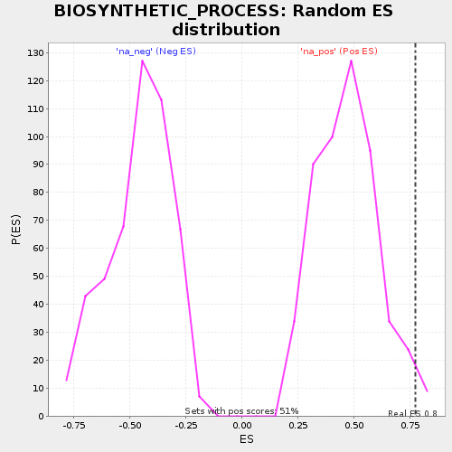

| | | Dataset | selected_gsea_35 |
| Phenotype | NoPhenotypeAvailable |
| Upregulated in class | na_pos |
| GeneSet | BIOSYNTHETIC_PROCESS |
| Enrichment Score (ES) | 0.7740101 |
| Normalized Enrichment Score (NES) | 1.6460836 |
| Nominal p-value | 0.019493178 |
| FDR q-value | 0.6618172 |
| FWER p-Value | 1.0 |
Table: GSEA Results Summary
 Fig 1: Enrichment plot: BIOSYNTHETIC_PROCESS
Fig 1: Enrichment plot: BIOSYNTHETIC_PROCESS
Profile of the Running ES Score & Positions of GeneSet Members on the Rank Ordered List
| PROBE | GENE SYMBOL | GENE_TITLE | RANK IN GENE LIST | RANK METRIC SCORE | RUNNING ES | CORE ENRICHMENT | | 1 | CD276 | | | 1 | 1.615 | 0.3490 | Yes |
| 2 | PTGS1 | | | 8 | 1.081 | 0.5360 | Yes |
| 3 | GCNT3 | | | 9 | 1.074 | 0.7740 | Yes |
| 4 | B3GALNT1 | | | 33 | 0.743 | 0.7368 | No |
Table: GSEA details [plain text format]

Fig 2: BIOSYNTHETIC_PROCESS: Random ES distribution
Gene set null distribution of ES for BIOSYNTHETIC_PROCESS